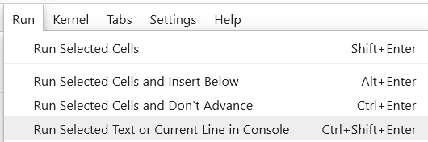

Introduction
JupyterLab est un des environnements disponibles dans Anaconda, et il apporte beaucoup de fonctionnalites supplementaires aux Jupyter Notebooks. Parmi celles qui m’interessent le plus :
- une table des matieres pour naviguer dans le document, elle reprend les titres Markdown du Notebook
- la possibilite d’executer ligne par ligne le contenu d’une cellule, ou le code selectionne a la souris. C’est tres appreciable quand le code d’une cellule plante et qu’on veut relancer une partie du code de la cellule pour identifier l’erreur
- l’ajout d’autres langages et logiciels au Laucher via des extensions
- la personnalisation de la disposition des fenetres
Dans l’impression d’ecran ci-dessous, on peut voir :
- dans le volet gauche la table des matieres
- un notebook au centre, avec une cellule dont on a selectionne le code “selection”
- a droite une console Python ou on a execute la 1ere ligne de la cellule puis l’objet “selection”
La table des matieres est une extension presente par defaut pour JupyterLab >= 3.0, pour les versions plus anciennes il faut l’installer (l’onglet tout a gauche en forme de piece de puzzle fournit la liste des extensions installees/installables). Voyon maintenant comment ajouter les autres fonctionnalites.
Execution ligne par ligne du code
On va dans Settings > Advanced Settings Editor > Keyboard Shortcuts et dans le volet “User Preferences” on copie-colle le JSON ci-dessous :
{
// List of Keyboard Shortcuts
"shortcuts": [
{
"command": "notebook:run-in-console",
"keys": [
"F9"
],
"selector": ".jp-Notebook.jp-mod-editMode"
},
]
}On peut evidemment remplacer la touche “F9” par le raccourci de son choix. Le raccourci est alors visible dans le menu Run :

Position des differentes fenetres
Une fois le raccourci utilise, la console apparait avec le resultat du code et il ne reste plus qu’a deplacer la console a la souris pour agencer JupyterLab comme on le souhaite : console en bas ou en haut, a droite ou a gauche, toujours visible en occupant la moitie de l’ecran (cf impression d’ecran precedente) ou visible en occupant l’integralite de l’ecran :
Dans ce cas l’onglet gauche “Altair.ipynb” est le notebook, l’autre onglet homonyme (mais de logo different) est la console Python.
Ajouter R au Launcher
On installe R et ses packages usuels (“R Essentials”) s avec la commande conda install -c r r-essentials.
On va ensuite dans File > New Launcher pour controler l’ajout du noyau R.